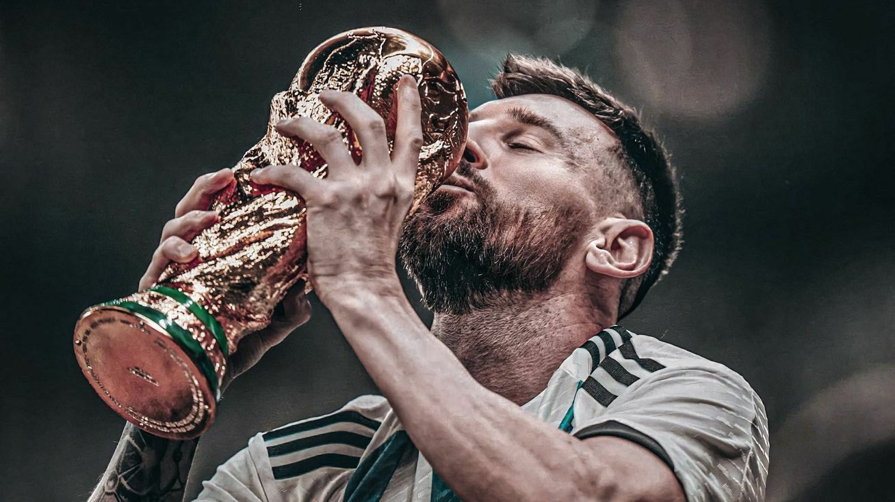
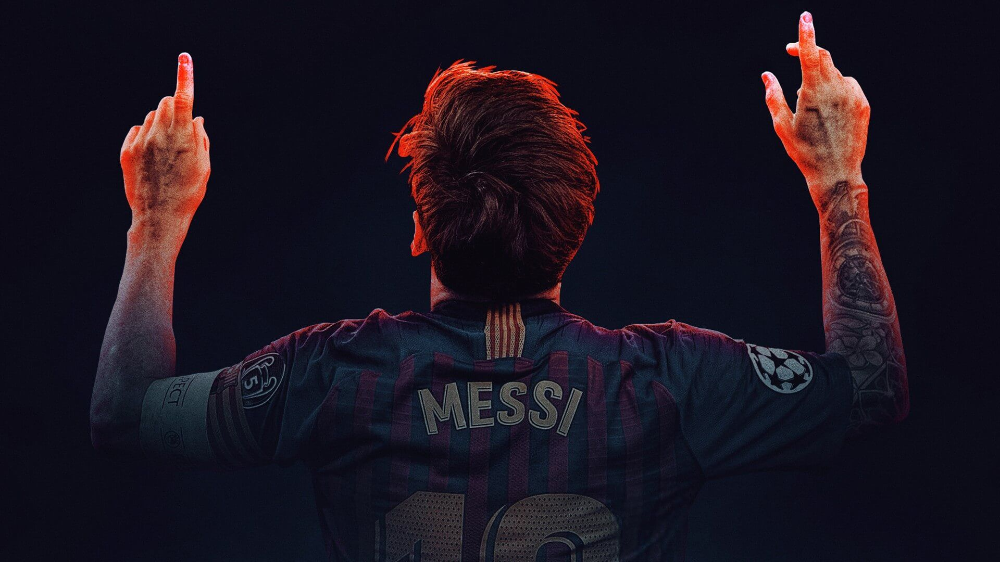

Més que un club
The Comprehensive History of Futbol Club Barcelona and the Immortal Legacy of Lionel Andrés Messi
The Comprehensive History of Futbol Club Barcelona and the Immortal Legacy of Lionel Andrés Messi
The epic narrative of FC Barcelona was sparked on November 29, 1899, by Swiss pioneer Hans Gamper. Placing a small classified ad in a local Barcelona newspaper to recruit interested players, Gamper initiated a sporting revolution. The response culminated in a historic meeting at Gimnasio Solé, giving birth to a club that would forever change the face of international football.
From its very roots, the club adopted the famous "Blaugrana" colors—deep blue and dark crimson. But it became much more than a sports team. Under various historical regimes, the club evolved into a fierce symbol of Catalan independence and cultural identity. The club's iconic home became one of the few places where people could speak the Catalan language and show their regional pride during politically tense periods, forging the core identity: "More than a club."
In 1973, FC Barcelona signed the brilliant Dutch maestro Johan Cruyff. Cruyff didn't just bring elite talent; he introduced a tactical vision that changed football philosophy forever. His theory of "Total Football"—where players could seamlessly swap positions and dominate the pitch through fluid spatial control—became the standard of FC Barcelona's play.
Cruyff returned in 1988 as manager to form the legendary "Dream Team." He established the modern philosophy of La Masia, instructing every youth rank to train in the same formation and quick-passing styles as the first team. This visionary architecture laid down the golden stepping stones for a young boy from Rosario, Argentina, who would arrive years later.
In September 2000, a small, quiet 13-year-old kid named Lionel Andrés Messi arrived in Barcelona for a trial. Despite his small frame, his genius was immediately evident. However, Messi was diagnosed with a growth hormone deficiency, and his family's budget in Argentina couldn't afford the necessary treatments.
Desperate not to lose this once-in-a-generation talent, Barcelona's sporting director Charly Rexach acted instantly. With no paper on hand at a local tennis club café, Rexach drafted Messi's first contractual agreement on a simple paper napkin. This fragile napkin, saved in history, marked the official arrival of Lionel Messi to La Masia, with FC Barcelona agreeing to cover all his medical costs.

Messi integrated effortlessly into the club's elite youth systems. His quick touches, magnetic dribbling, and incredible vision allowed him to sprint past older defenders, dominating every youth division until his historic first-team debut in 2004 under manager Frank Rijkaard.
The appointment of Pep Guardiola as manager in 2008 unlocked the true magic of Lionel Messi. Guardiola placed Messi at the heart of his "Tiki-Taka" system—introducing him as a "False Nine." Playing in this central, fluid position, Messi terrorized opposition center-backs, driving Barca's offensive unit to unprecedented peaks.
In the historic 2008-09 season, Barcelona secured a historic Sextuple—winning every competitive trophy in a single calendar year. Messi's legendary header against Manchester United in the Champions League final established him as the global king of football, leading to his very first Ballon d'Or award.

By the year 2012, Messi entered a state of pure scoring supremacy. He scored a mind-boggling 91 goals in a single calendar year, breaking Gerd Müller's decades-old record and writing his name into the Guinness Book of World Records.
To keep Messi supported, Barcelona constructed one of the most lethal attacking lines in football history, pairing Messi with strike partners Neymar Jr. and Luis Suárez. Together, they formed the unstoppable "MSN" trio. Their connection wasn't just built on talent, but a deep friendship and selflessness on the pitch.
Under Luis Enrique, the MSN-led Barcelona achieved another European treble in 2015, sweeping La Liga, the Copa del Rey, and the UEFA Champions League. Opponents were systematically torn apart by Messi's precision long-balls, diagonal runs, and beautiful link-up plays.
Lionel Messi's stats at Barcelona read like fiction. Over his 21-year association with the Catalan club, he destroyed almost every club record in existence, leaving an unmatched legacy of individual excellence and collective glory.
| Metric / Competition | FC Barcelona Record All-Time | Lionel Messi (Individual Contribution) |
|---|---|---|
| Total Official Matches | Est. 1899 | 778 Matches (All-time Record) |
| Total Goals Scored | Thousands | 672 Goals (All-time Record) |
| La Liga Titles | 27 Titles | 10 Titles |
| Champions League Titles | 5 Titles | 4 Titles |
| Copa del Rey Wins | 31 Titles | 7 Titles |
| Ballon d'Or Trophies | 12 Trophies (Club total) | 8 Trophies (Individual Record) |
His consistency remained his greatest strength. Year after year, Messi recorded over 40 goals a season, combining lethal finishing with playmaker intelligence that led to him becoming the top assist provider in La Liga history as well.
In August 2021, a day that Barcelona fans hoped would never come arrived. Due to severe economic hurdles and strict La Liga financial regulations, the club could not register Lionel Messi's contract extension. In an emotional press conference, a tearful Messi said a painful goodbye to the club and city he loved.

Though he moved on to new chapters with Paris Saint-Germain and Inter Miami, and finally hoisted the World Cup trophy with Argentina, the Blaugrana jersey remains his definitive skin. The history of FC Barcelona and the legend of Lionel Messi are permanently merged—two names that will forever represent the peak of beautiful football.
Ballon d'Or Awards
Champions League Titles
La Liga Titles
FIFA World Cup
Joined FC Barcelona's La Masia academy.
Made his first-team debut.
Won his first Ballon d'Or award.
Scored a record 91 goals in a calendar year.
Won the Treble with Barcelona.
Won the FIFA World Cup with Argentina.
Messi's first professional contract with Barcelona was famously written on a paper napkin.
He scored 91 goals in 2012, a world record for the most goals in a calendar year.
Messi is Barcelona's all-time leading scorer with 672 official goals.
He has provided more assists than any other player in La Liga history.
He spent over 20 years associated with FC Barcelona, from academy prospect to club legend.
"You have to fight to reach your dream. You have to sacrifice and work hard for it."
"The best decisions aren't made with your mind, but with your instinct."
"I start early and I stay late, day after day, year after year."
Lionel Messi's influence on football extends beyond goals, trophies, and records. His style of play inspired millions of young footballers across the globe.
For FC Barcelona supporters, Messi represents the perfect embodiment of the club's values, philosophy, and commitment to beautiful football.
Even after his departure, his legacy continues to define an era that many consider the greatest period in the club's history.